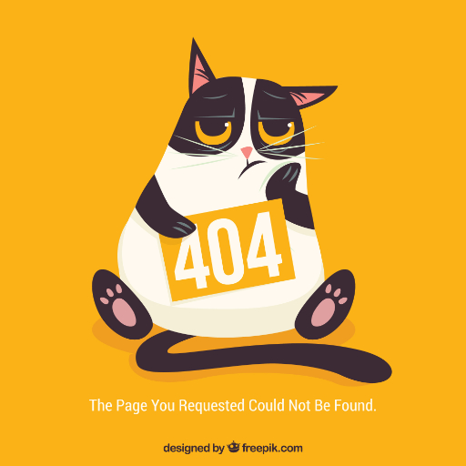

<main class="vue-app">
  <h1>404 - Seite nicht gefunden</h1>
  

  <my-component :message="myData"></my-component>
</main>

<script type="text/javascript">
// –– inject some data for vue
var myData = 'Hallo, ich bin eine vue componente!';

// merge data to global appData scope which our iniVueApp() uses later ...
window.appData = Object.assign({}, window.appData || {}, {
  myData: myData,
});
</script>
